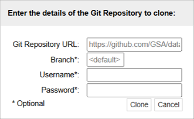

x = 5
print(x)5Whichever course you are taking you will likely need to write code at some point - Chemistry - Analyse experimental data - Automate repetitive calculations - Model chemical reactions/simulations
Whichever course you are taking you will likely need to write code at some point - Physics - Simulate physical systems - Process experimental measurements - Visualise complex phenomena
Whichever course you are taking you will likely need to write code at some point - Data Science - Clean and organise datasets - Apply statistical methods and machine learning - Communicate insights with visualisations
Introduction to Coding and Data Analysis for Scientists 2025Unit Information and ResourcesJupyter Classic (Legacy) is selected.+GitRepogit@github.com:TomMaullin/SCIF10002-2025.git
=printx = 5
print(x)5Variables have their own Data Types
True/False valuesWe spent some time looking at various things we could do with some of these data types
# Int
x = 5
# String
letters = "hello"
# Booleans
cat_is_black = True
# A list of strings
shopping = ["milk", "bread", "eggs", "cheese"]A Boolean is variable that can be either True or False
Booleans represent logical statements.
For instance, we saw an example where:
cat_is_black represented the sentence “The cat is black”cat_has_four_legs represented the sentence “The cat has four legs”We can use logical operators to combine Boolean statements
cat_is_black and cat_has_four_legs represented the sentence “The cat is black and has four legs”cat_is_black = True
cat_has_four_legs = False
print(cat_is_black and cat_has_four_legs)False
if statement comes in…print("Hello World")Hello World# Integer value
number = 5
# Boolean value (true if number posiitve)
my_boolean = number > 0
# If the number is positive, print "Positive number"
if my_boolean:
print("Positive number")Positive number# Integer value
number = 5
# If the number is positive, print "Positive number"
if number > 0:
print("Positive number")Positive numberelse!# Integer value
number = 5
# If the number is positive, print "Positive number"
if number > 0:
print("Positive number")
# Otherwise, print "Non-positive number"
else:
print("Non-positive number")Positive numberelif (short for else if) can be added to check more extra conditions.# Integer value
number = 5
# If the number is positive, print "Positive number"
if number > 0:
print("Positive number")
# Otherwise, if the number is zero, print "Zero"
elif number == 0:
print("Zero")
# Otherwise, print "Negative number"
else:
print("Negative number")Positive numberelif can be added.